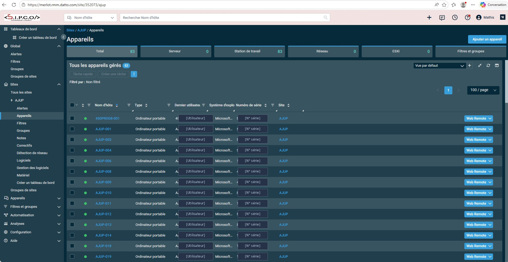
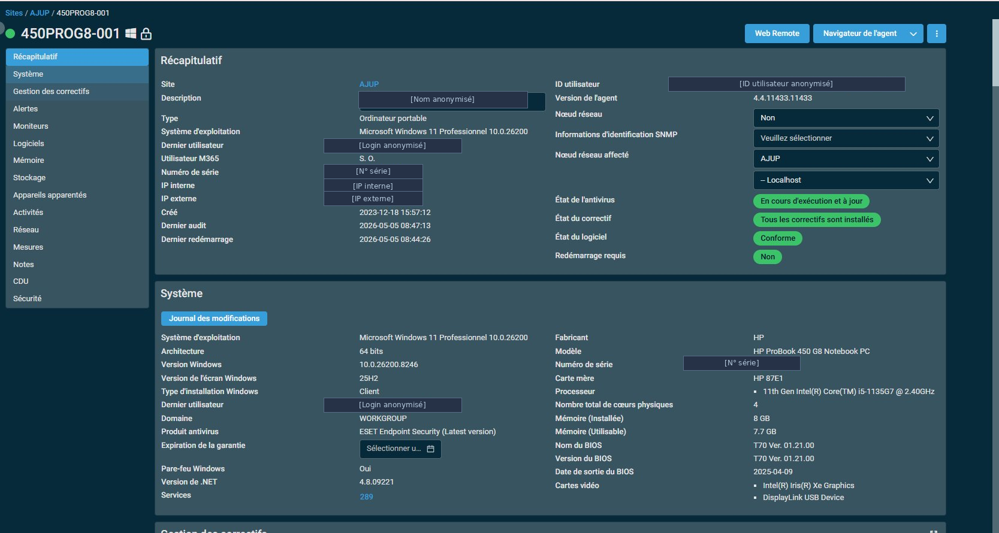

Infogérance avec
Datto RMM
Mise en place et gestion du parc informatique de clients professionnels via la plateforme de supervision à distance Datto RMM.
Contexte
Qu'est-ce que l'infogérance ?
L'infogérance consiste à confier la gestion et la supervision du parc informatique d'une entreprise à un prestataire externe. Chez SIPCO, cela passe par la plateforme Datto RMM (Remote Monitoring and Management), qui permet de surveiller, gérer et maintenir à distance l'ensemble des appareils des clients.
Pour chaque client, la première étape est de recenser tous les appareils informatiques en leur possession (ordinateurs portables, tours, serveurs…) puis de les enregistrer dans Datto sous le nom de l'entreprise cliente. Une fois les agents déployés sur chaque machine, la supervision devient totalement centralisée.
Exemple concret
Client AJUP — 83 appareils infogérés
Pour illustrer la mise en place, prenons l'exemple d'AJUP, l'un des plus grands clients de SIPCO, avec 83 appareils informatiques infogérés. Chaque machine est référencée dans Datto avec son nom, son type, son utilisateur et son système d'exploitation.
La vue parc ci-dessous permet de voir en un coup d'œil l'ensemble des appareils gérés, leur statut, leur version de Windows et leur niveau de mise à jour.


Fonctionnement
Comment fonctionne Datto RMM ?
Datto RMM est une plateforme cloud de supervision à distance. Un agent logiciel est installé sur chaque appareil géré. Cet agent remonte en temps réel toutes les informations de la machine vers la console centralisée, accessible depuis n'importe où.
- Inventaire automatique — marque, modèle, processeur, RAM, stockage, numéro de série, sont collectés automatiquement dès l'installation de l'agent.
- Supervision en temps réel — l'état de chaque appareil (en ligne / hors ligne), les alertes matérielles et les niveaux de ressources sont visibles instantanément.
- Gestion des mises à jour — Datto indique le statut Windows Update de chaque machine et permet de déployer les mises à jour à distance.
- Prise en main à distance — il est possible de se connecter directement sur un appareil sans intervention physique pour résoudre un problème.
- Alertes et tickets — tout incident déclenche automatiquement une alerte qui peut être transformée en ticket d'intervention.
Données collectées
Ce que l'on peut lire dans la fiche appareil
La fiche détaillée d'un appareil dans Datto RMM centralise toutes les informations utiles pour le technicien :
- Identification — nom de l'appareil, utilisateur associé, groupe de sites (nom du client), dernier agent connecté.
- Système d'exploitation — version de Windows, architecture, date d'installation, version du noyau.
- Matériel — fabricant, modèle exact, processeur, quantité de RAM, capacité et espace disque restant, résolution d'écran.
- Réseau — adresse IP locale, adresse MAC, nom de domaine.
- Sécurité & maintenance — état de l'antivirus, date de la dernière sauvegarde, statut des mises à jour Windows.
- Garantie — date de fin de garantie constructeur récupérée automatiquement depuis le numéro de série.
Compétences mobilisées
Ce que ce projet m'a apporté
Ce projet m'a permis de comprendre concrètement comment un prestataire informatique gère un parc de machines en entreprise, en utilisant des outils professionnels de supervision à distance.